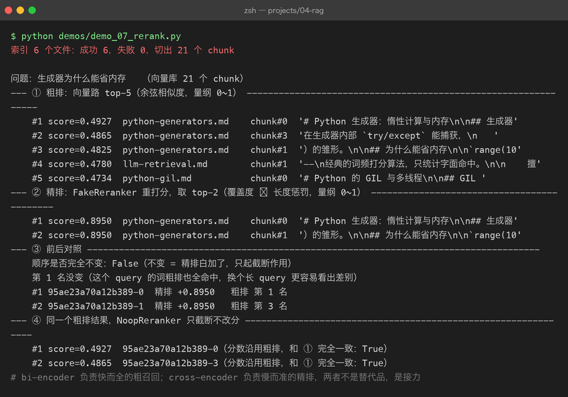
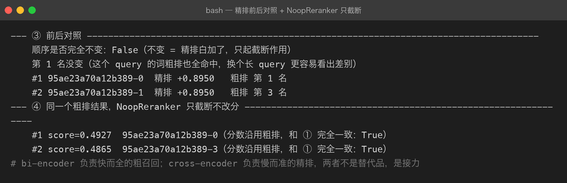

Project 04 — Chapter 07：Rerank【重排序】
状态：✅ 已成文（文档先行，作为 src/ 落地设计依据） 对应代码：
src/rag/reranker.py（代码落地时实现）
1. 本章要解决什么问题
Chapter 06 的结尾留了一个尖锐的问题：向量检索的相似度只衡量「语义像不像」，判断不了「能不能回答」。导致的结果是——top-k 里真正的答案经常排在第 3、第 5 名，而第 1、2 名是「语义很像但答非所问」的段落。生成模型读 context 是有位置偏好的（开头和结尾的内容更被重视，中间容易被忽略），答案排在第 5 名，效果就打折。
有没有办法把那 k 条候选重新排一次序，让真正的答案浮到最上面？有，这就是 rerank（重排序）。它不是靠调相似度公式，而是换一个更强但更慢的模型，只对少量候选做精细判断。
先破除一个流程误解：
你以为： rerank 是在检索之前给所有文档"打更准的分"
实际上： rerank 永远在召回之后——先粗筛出 20 条，
再对这 20 条精排。顺序反了性能直接爆炸（见踩坑 4）本章目标：
理解两阶段检索架构（bi-encoder 粗召回 + cross-encoder 精排），并实现可插拔的 Reranker 抽象。
2. 为什么需要这个知识
核心是理解两种架构的根本差异，以及由此换来的「快」与「准」：
bi-encoder（双塔，Chapter 03 的 embedding 模型就是它）：query 和 doc 各自独立过一遍编码器，得到两个向量，再算余弦。两座「塔」互不通信。好处是 doc 向量可以离线批量算好存进向量库，在线查询只编码一次 query——这就是向量库毫秒级响应的原因。
cross-encoder（交叉编码）：把 query 和 doc 拼成一段文本 [CLS] query [SEP] doc [SEP] 一起送进模型。每个 query 的 token 都能对每个 doc 的 token 做 attention（注意力交互），模型能判断出「这一段确实在回答这个问题」这种双塔永远看不到的细粒度对应关系。代价是：每对 (query, doc) 都要跑一次完整的前向推理，无法预计算——1000 个候选就是 1000 次推理。
你以为： 既然 cross-encoder 更准，干脆用它检索全部文档
实际上： 它每对 (query, doc) 都要一次前向推理，没法预计算。
10 万文档 × 每秒几十对 = 用户等几分钟
所以只能用它精排少量候选于是有了两阶段架构——Java 里这就是「先 LIMIT 20 粗筛再精确 join」的查询优化，或「一级缓存批量粗筛 + 二级缓存逐条精确查」的组合：
用户 query
↓ bi-encoder 粗召回：快（毫秒级），从全库捞 20 条（宁多勿漏）
↓ cross-encoder 精排：慢（几百毫秒），只对这 20 条逐对打分
↓ 取 top_n（如 5）交给 Chapter 08 拼 context一句话：召回阶段用快模型保证不漏，精排阶段用准模型保证排序对。两阶段的预算分配（20 → 5）见 3.3。
3. 核心概念
3.1 Rerank 模型与两种接入方式
常用的 rerank 模型是 bge-reranker-v2-m3（BAAI 出品，多语言、轻量，和 Chapter 03 用过的 bge 系列 embedding 是一家）。接入方式两种：
| API 方式（SiliconFlow / Jina / Cohere rerank 接口） | 本地方式（sentence-transformers CrossEncoder） | |
|---|---|---|
| 部署成本 | 零（HTTP 调用） | 需下载模型 + 本机推理资源 |
| 延迟 | 网络往返 + 服务端推理 | 无网络开销，但受本机算力限制 |
| 费用 | 按 token / 按次计费 | 免费 |
| 教学价值 | 学真实生产接口契约 | 能看到 cross-encoder 的实际输出形态 |
| 依赖 | httpx | sentence-transformers + torch |
本项目两种都实现，用抽象基类统一契约；本地方式作为可选依赖（机器跑不动 torch 时能整体跳过）。
3.2 Reranker 的接口契约
延续 Chapter 03/04 的 ABC（抽象基类）+ Fake 模式：
class BaseReranker(ABC):
@abstractmethod
def rerank(self, query: str, chunks: list[ScoredChunk], top_n: int = 5) -> list[ScoredChunk]:
"""按 query 相关性重新排序，返回前 top_n 条（rerank_score 覆写 chunk.score）"""三个实现：
@dataclass
class SiliconFlowReranker(BaseReranker):
"""HTTP API 精排。bge-reranker-v2-m3 走 SiliconFlow rerank 接口"""
api_key: str
model: str = "BAAI/bge-reranker-v2-m3"
base_url: str = "https://api.siliconflow.cn/v1/rerank"
def rerank(self, query, chunks, top_n=5) -> list[ScoredChunk]:
if not chunks:
return []
resp = httpx.post(
self.base_url,
headers={"Authorization": f"Bearer {self.api_key}"},
json={
"model": self.model,
"query": query,
"documents": [c.text for c in chunks], # 只送文本，长度上限见踩坑 3
"top_n": top_n,
},
timeout=30,
)
resp.raise_for_status()
results = resp.json()["results"] # [{"index": 3, "relevance_score": 0.91}, ...]
out = []
for r in results: # API 已按分数降序返回
chunk = chunks[r["index"]]
chunk.score = float(r["relevance_score"])
out.append(chunk)
return out
@dataclass
class NoopReranker(BaseReranker):
"""直通实现：原样返回前 top_n 条。测试 / 无 rerank 资源时使用。
Java 类比：NoOp 实现模式——接口不变，行为为空，保证调用方代码统一。
"""
def rerank(self, query, chunks, top_n=5) -> list[ScoredChunk]:
return chunks[:top_n]NoopReranker 的意义和 Chapter 03 的 FakeClient 一致：让 pipeline 代码不感知 rerank 有没有真的发生，单测里塞一个 Noop 就能把检索逻辑测完整，不需要网络和模型。本地 CrossEncoder 版本落地时按同样契约实现（CrossEncoder(model_name).score([(query, c.text) for c in chunks]) 得到分数列表，再排序截断），此处不展开。
3.3 什么时候值得上 rerank
rerank 是拿延迟换质量，值不值看场景：
| 方案 | 召回 | 精排 | 典型端到端延迟（粗估） | 适用 |
|---|---|---|---|---|
| 纯向量 top-5 | 全库 → 5 | 无 | 几十~几百 ms | 文档量小、对质量要求一般 |
| 两阶段（召回 20 → 精排 5） | 全库 → 20 | 20 次推理 | +数百 ms（API）/ 更久（CPU 本地） | 文档量千级以上、答案质量优先 |
| 精排全部文档 | — | 上万次推理 | 分钟级 ❌ | 永远不要 |
经验法则：
- 文档量 < 几百条：embedding 质量好时，rerank 提升有限，先别加；
- 文档量千级~万级：性价比最高区间，召回 20 条几乎不漏答案，精排只需 20 次推理；
- 在线客服等延迟敏感场景：精排候选降到 10、或换更小的 rerank 模型，做延迟预算的取舍。
延迟的账要这么算：向量库搜索是「一次向量比较 × 全库」（有索引加速），rerank 是「一次完整 Transformer 前向 × 候选数」——后者单次成本高两个数量级，所以候选数必须严格控制，这就是「先粗召回 k=20 再精排」的由来（Chapter 05 的 fetch_k 参数在这里兑现价值）。


4. 动手实现（设计稿）
以下代码将在
src/rag/reranker.py落地时实现，这里先当设计稿读。目标：pipeline 侧一行切换「有/无 rerank」。
"""src/rag/reranker.py — 重排序抽象：BaseReranker + API 实现 + Noop 直通"""
from __future__ import annotations
from abc import ABC, abstractmethod
from dataclasses import dataclass
import httpx
from rag.vector_store import ScoredChunk
class BaseReranker(ABC):
"""rerank 契约：输入 query + 候选 chunks，输出按相关性降序的前 top_n 条。
实现纪律：① 必须截断到 top_n；② 分数覆写进 chunk.score；
③ 不修改传入列表的顺序（返回新列表）。
"""
@abstractmethod
def rerank(
self, query: str, chunks: list[ScoredChunk], top_n: int = 5
) -> list[ScoredChunk]: ...
@dataclass
class SiliconFlowReranker(BaseReranker):
api_key: str
model: str = "BAAI/bge-reranker-v2-m3"
base_url: str = "https://api.siliconflow.cn/v1/rerank"
max_doc_chars: int = 4000 # 超过 cross-encoder 输入上限会被服务端截断，先主动控住
def rerank(self, query, chunks, top_n=5) -> list[ScoredChunk]:
if not chunks:
return []
top_n = min(top_n, len(chunks))
resp = httpx.post(
self.base_url,
headers={"Authorization": f"Bearer {self.api_key}"},
json={
"model": self.model,
"query": query,
"documents": [c.text[: self.max_doc_chars] for c in chunks],
"top_n": top_n,
},
timeout=30,
)
resp.raise_for_status()
out: list[ScoredChunk] = []
for r in resp.json()["results"]:
chunk = chunks[r["index"]]
chunk.score = float(r["relevance_score"]) # rerank 分数语义见踩坑 1
out.append(chunk)
return out[:top_n] # 双保险：即使 API 忽略 top_n 也截断
@dataclass
class NoopReranker(BaseReranker):
"""测试与降级用：跳过精排，保持 chunk 原有顺序取前 top_n"""
def rerank(self, query, chunks, top_n=5) -> list[ScoredChunk]:
return chunks[:top_n]pipeline 侧的接入方式（Chapter 09 完整实现）：
reranker: BaseReranker = (
SiliconFlowReranker(api_key=settings.api_key)
if settings.enable_rerank
else NoopReranker()
)
hits = retriever.retrieve(query, top_k=20) # 粗召回，故意取大 k
final = reranker.rerank(query, hits, top_n=5) # 精排留 5 条给 context有 rerank 和没 rerank，pipeline 代码一个字都不用改——只是 BaseReranker 换了个实现。这就是依赖倒置：pipeline 依赖抽象，不依赖具体精排服务。
5. 踩坑清单
坑 1：rerank 分数与相似度分数混用排序
现象：把向量检索的余弦分数（0~1）和 rerank 的 relevance_score 放进同一个列表排序，或者用「rerank 分数 > 0.5 就保留」这种照搬相似度的阈值，结果完全不可预期。
原因：两种分数语义不同。余弦是「语义夹角」，rerank 分数是「该模型对 query-doc 配对的相关性判断」，两者分布完全不一样（bge-reranker 的输出甚至可能是 logit 形态，不一定压在 0~1）。混用等于把摄氏度和华氏度排在一起。
正确做法：rerank 之后以 rerank 分数为准全盘重排，向量分数仅保留用于日志/调试。阶段之间只传递排名和最终选中的 chunk，不跨阶段比较分数。
坑 2：rerank 之后忘了截断 top_n
现象：pipeline 直接把 rerank() 的返回全部塞进 prompt，chunk 越攒越多，token 消耗翻倍，还把答案稀释在噪音里。
原因：部分 rerank 实现的 top_n 参数是可选的，不传或 API 忽略时会返回全部候选；调用方想当然以为「rerank 就是帮我选好了」。
坑 3：长 chunk 超出 cross-encoder 输入上限被静默截断
现象：某些 chunk 长达 8000 字符，rerank 结果里它们无一例外排最后——看起来像「模型判定它们不相关」，实际是输入被截断只送进了前半段，答案在截掉的后半段里。
原因：cross-encoder 的输入上限（如 512 或 8192 token）远小于很多 embedding 模型；超长文本被服务端或库静默剪掉，剪掉的恰好可能是答案。
正确做法：① 发送前主动截断到安全长度（max_doc_chars，且截断前确认 chunking 阶段的块大小与此匹配）；② chunk 里如果带标题/来源等结构性前缀，保证前缀不被截掉；③ 观察「某类长文档永远排不进 top_n」这一异常信号时，先怀疑截断而不是模型能力。
坑 4：把 rerank 用在召回之前，顺序反了
现象：对全库几万条文档先跑 rerank 再排序，接口从 200ms 劣化到几十秒甚至超时。
原因：cross-encoder 无法预计算（每次 query 都要和每条 doc 配对推理），候选数不控制就没有意义。rerank 的定位是「精排少量候选」，不是「更强的检索引擎」。
正确做法：固定两阶段顺序——bi-encoder 粗召回（fetch_k=20）→ cross-encoder 精排（top_n=5）。rerank 永远只见到几十条候选，见不到全库。
6. 自检清单
- [ ] 能画出两阶段架构图，并解释 bi-encoder 为什么快、cross-encoder 为什么准
- [ ] 能说出「无法预计算」这一条如何直接推导出 rerank 必须在召回之后
- [ ]
BaseReranker/SiliconFlowReranker/NoopReranker三者的职责划分能对上号 - [ ] 能算一笔延迟账：为什么粗召回 k=20 而不是 k=200
- [ ] 能说出至少两种「rerank 分数不能与相似度分数混用」的理由
- [ ] 知道自己项目里 rerank 的开关在哪个配置项、降级路径是什么（NoopReranker）
上一章：06-similarity-search.md —— 相似度判断不了「能不能回答」，本章用 cross-encoder 让 query 和文档真正见了一面。
下一章：08-context-assembly.md —— 精排出的 5 条好材料，怎么拼成一段模型爱读的上下文。